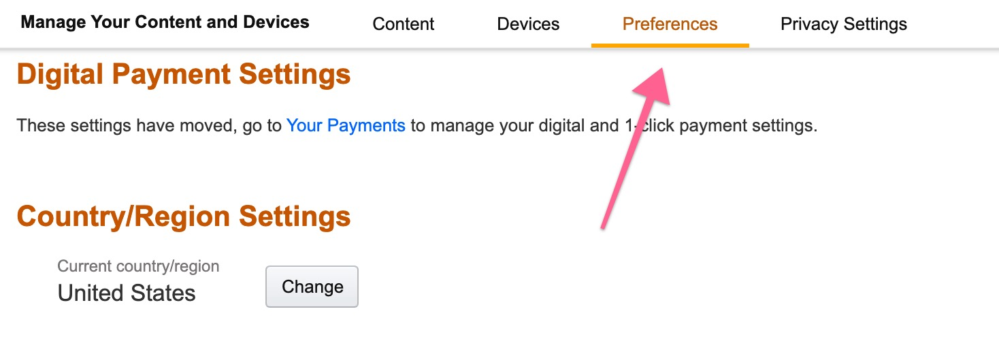
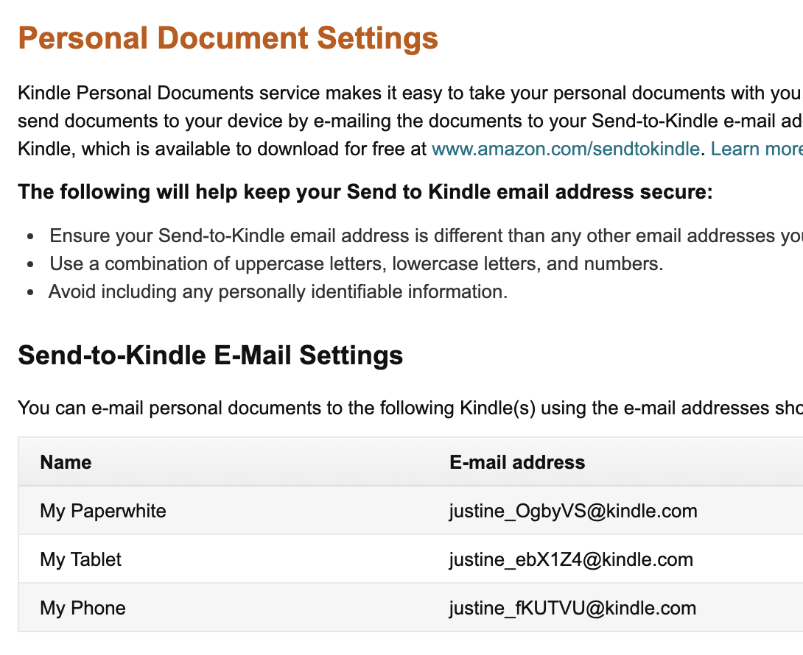
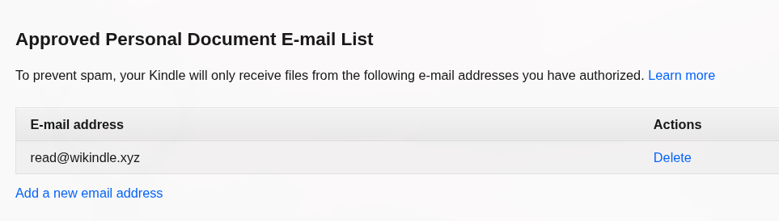

Setting up your Kindle
Two things live in the same Amazon settings page: the address your Kindle receives documents at, and the list of senders it will accept them from. You need the first to sign up, and the second or nothing will arrive.
Open your Amazon settings
Open Manage Your Content and Devices
This opens amazon.com. If your Amazon account is on another site, use that one instead.
-
Go to the Preferences tab
Manage Your Content and Devices opens on Content. Everything you need is under Preferences.

Preferences is the third tab along the top. -
Find your Send to Kindle address
Scroll down to Personal Document Settings. Under Send-to-Kindle E-Mail Settings you'll see one address per device. Pick whichever device you want to read on — they're different addresses, and each one delivers only to that device.

One address per device, each ending in @kindle.com.Copy it exactly, capitals and all. Amazon puts a random mix of upper and lower case in these addresses, and they are case-sensitive —aBcDeFis not the same address asabcdef. This is also not the email you log in to Amazon with. -
Let wikindle send to it
Still on the same page, find Approved Personal Document E-mail List, click Add a new email address, and add:
read@wikindle.xyz
This is what it should look like afterwards. This step is not optional. Amazon accepts documents only from addresses on this list. Until ours is on it, everything we send is thrown away — and Amazon tells nobody, so neither you nor we can see that it happened.
That's it
Sign up with the address from step 2 and the next edition will arrive on that device.